<!-- <mat-tab-group class="noselect" [backgroundColor]="tabBackgroundColor" [color]="tabColor">
  <mat-tab >
    <ng-template mat-tab-label>
      <span>Account</span>
    </ng-template>
    <app-useraccount ></app-useraccount>
  </mat-tab>
  <mat-tab>
      <ng-template mat-tab-label><span>Trading Partner<br>Discovery</span></ng-template>
      <app-service1></app-service1>
  </mat-tab>

  <mat-tab> 
    <ng-template mat-tab-label><span>Business 360</span> </ng-template>
    <app-service3></app-service3>
  </mat-tab>

  <mat-tab> 
      <ng-template mat-tab-label><span>Inventory Planning</span> </ng-template>
      <app-service2></app-service2>
  </mat-tab>

  <mat-tab> 
    <ng-template mat-tab-label><span>Sales Prediction</span> </ng-template>
    <app-service4></app-service4>
  </mat-tab>

  <mat-tab> 
    <ng-template mat-tab-label><span>Shipping<br>Optimization</span> </ng-template>
    <app-service5></app-service5>
  </mat-tab>

  <mat-tab> 
      <ng-template mat-tab-label>
          <span>EDI</span>
      </ng-template>
    <app-edi-intro></app-edi-intro>
  </mat-tab>
</mat-tab-group>
 -->


 
<div class="noselect container-fluid">
    <div class="content">
    <div class="row">
    <mat-toolbar  color="primary"> 
        <mat-toolbar-row>
          
            <mat-divider [vertical]="true"></mat-divider>
          
            <button mat-button mat-raised-button color="accent" [matMenuTriggerFor]="account">Account</button>
            <mat-menu #account="matMenu">
              <a mat-menu-item [routerLink]="[{ outlets: { menu: ['account'] } }]">Account</a>
            </mat-menu>
          
          <mat-divider [vertical]="true"></mat-divider>
          
          <button mat-button mat-raised-button color="accent" [matMenuTriggerFor]="menu">AI Service</button>
          <mat-menu #menu="matMenu">
            <a mat-menu-item [routerLink]="[{ outlets: { menu: ['service1'] } }]">Partner Matching</a>
            <mat-divider></mat-divider>
            <a mat-menu-item [routerLink]="[{ outlets: { menu: ['service3'] } }]">Business 360</a>
            <mat-divider></mat-divider>
            <a mat-menu-item [routerLink]="[{ outlets: { menu: ['service2'] } }]">Inventory Planning</a>
            <mat-divider></mat-divider>
            <a mat-menu-item [routerLink]="[{ outlets: { menu: ['service4'] } }]">Demand Forecasting</a>
            <mat-divider></mat-divider>
            <a mat-menu-item [routerLink]="[{ outlets: { menu: ['service5'] } }]">Logistics Optimization</a>
          </mat-menu>

          <mat-divider [vertical]="true"></mat-divider>
          
          <button mat-button mat-raised-button color="accent" [matMenuTriggerFor]="EDI">Data Service</button>
          <mat-menu #EDI="matMenu">
            <a mat-menu-item [routerLink]="[{ outlets: { menu: ['EDIintro'] } }]">EDI Conversion</a>
            <a mat-menu-item href="">Data Storage</a>
            <a mat-menu-item href="">Data Computation</a>
          </mat-menu>
    
        </mat-toolbar-row>
      </mat-toolbar>
    </div>

  <div class="row">
      <router-outlet name="menu" ></router-outlet>
  </div>
</div>

  <div class="footer row justify-content-md-center">
    <div class="col-md-5 text-center">
    <p>
      2018©, PHARUS PROTOCOL. ALL RIGHTS RESERVED.
    </p>
    </div>
  </div>

</div>
 